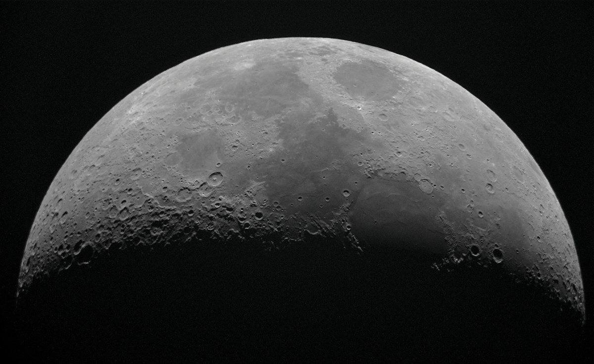

Artemis I data shows higher lunar radiation
Unexpected particle flux near the Moon challenges existing deep-space shielding models.

The Artemis telemetry
A single sensor readout from the Artemis I mission recorded a spike in ionizing radiation. This specific data point came from the spacecraft during its lunar transit in late 2022. The numbers did not match the predictions used to design the mission's shielding.
Current deep-space transit models rely on solar cycle averages and established galactic cosmic ray flux. The Artemis I data suggests these models are insufficient for lunar proximity. We must rethink how we protect human crews during long-duration stays in the cislunar environment.
The shielding gap
Engineers designed the Orion capsule to withstand known radiation environments. These designs assume a certain baseline of particle interaction. The mission data reveals that the local lunar environment is more volatile than expected. This discrepancy creates a technical debt for future crewed missions.
The unexpected flux might stem from unmapped magnetic interactions near the Moon. We cannot yet say if this is a localized phenomenon or a regional trend. The discrepancy between simulation and reality is the primary concern for mission planners. It suggests our current maps of the lunar radiation environment are incomplete.
Shielding is heavy.
Model limitations
Existing models use historical data from previous deep-space probes. These probes often operated in different orbits or at different solar phases. Relying on old datasets creates a false sense of security for new mission architectures. The Artemis I results highlight this specific vulnerability in our predictive science.
We do not know the exact composition of the high-energy particles detected. It remains unclear if the spike was a transient event or a sustained flux. Without more frequent measurements, we are guessing at the cause. The limitation of our current knowledge is the lack of continuous monitoring near the Moon.
The solar variable
Solar activity plays a massive role in radiation levels. The mission occurred during a specific phase of the solar cycle. Some argue that the readings are merely a product of that particular timing. This view suggests the radiation environment is not inherently more dangerous, just temporarily more active.
However, even accounting for solar activity, the levels exceeded the modeled thresholds. A simple solar cycle adjustment does not bridge the gap between the prediction and the observation. The error margin in the models seems larger than previously acknowledged. This makes the entire predictive framework look shaky.
Counter-arguments in planning
Some mission architects suggest that the sensor itself may have experienced interference. They argue that the hardware might not have been calibrated for these specific energy levels. This perspective shifts the blame from the physics to the instrumentation. It is a conservative approach to data interpretation.
If the sensors are the problem, the mission physics remains intact. This would mean our models are still valid and our shielding is sufficient. However, if the sensors are accurate, the entire mission profile is at risk. We cannot assume hardware error without a thorough investigation of the telemetry logs.
The physical reality
Radiation leaves a trace on electronic components. Looking at the logs, one might see subtle bit-flips in the non-critical systems. These are not catastrophic, but they are present. This physical evidence supports the idea that the environment was harsher than anticipated.
The shielding material itself shows no signs of structural degradation. This is a relief for immediate mission safety. Yet, the electronic interference remains a documented reality. We are seeing the effects of a medium we thought we understood.
Future mission implications
Future crewed missions to the Moon cannot rely on current shielding mass estimates. If the radiation is higher, the crew requires more protection. More protection means more mass. More mass increases launch costs and complicates orbital mechanics.
This creates a cycle of increasing complexity for NASA and its partners. Every gram of extra shielding must be justified by a survival probability. If the survival probability drops because of unforeseen radiation, the math changes. The mission architecture must evolve to meet this new reality.
Unanswered questions
We do not know if the Moon's crust contributes to this flux through secondary particle production. The interaction between solar wind and lunar regolith is complex. We also lack data on how these particles behave in the lunar shadow. This creates a significant blind spot in our deep-space situational awareness.
The discrepancy is a call for better sensors and more frequent observations. We need a dedicated constellation of small satellites to map the cislunar radiation environment. Relying on single-mission data is a recipe for future failure. We must turn these surprising readings into a standardized baseline.
The practical path
Mission planners must now incorporate a higher margin of error into their shielding calculations. This will likely result in heavier spacecraft for the Artemis II and III flights. It is a necessary, if expensive, adjustment to our lunar ambitions. Safety in space requires more than just optimistic modeling.
The Artemis I mission has provided a much-needed reality check. It has moved the conversation from theoretical models to empirical observations. We are now forced to face the actual environment of the Moon. This is a difficult but essential step for human spaceflight.